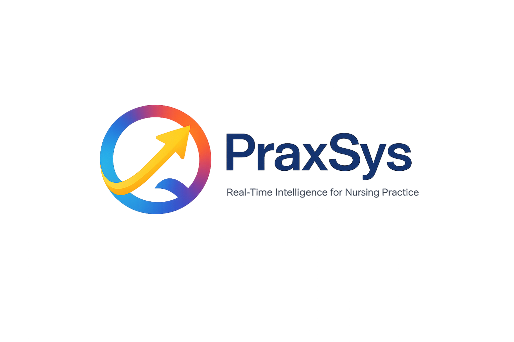

Real-Time Intelligence for Nursing Practice
MAINEHEALTH
Reset demo
CONFIDENTIAL REVIEW COPY
CONFIDENTIAL · PATENT PENDING · Synthetic demonstration data only · Unauthorized copying or redistribution prohibited